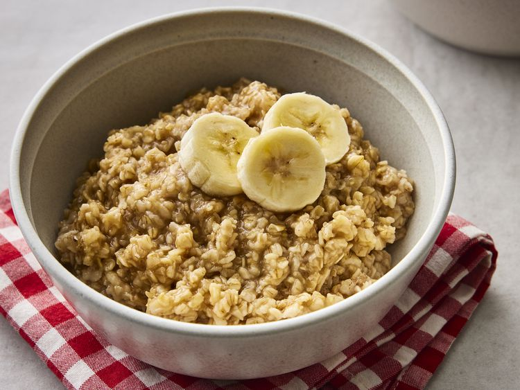

Oatmeal

A healthy breakfast for a powerful start
To prepare your breakfast for more days than one,
you can pour larger amounts of the ingredients together
The ingredients are cheap and have a long expiration date
Ingredients
- oats
- Bananas
- pumpkin seeds
- cashews
- walnuts
- linseed
Follow these steps
- Heat the pan and put some oil in it
- Cut the onions and put them into the pan
- Crumble the tofu and give it to the onions
- Let it fry till its getting some rost flavors
- Add those Beans and let them get hot
- Now add the sauce of your choice and stir the whole thing
- Reduce the heat and prepare the tortilla
- Pour the cooked mass into the tortilla and add some cheese if you like
- Roll it in
- Done, bon appetit